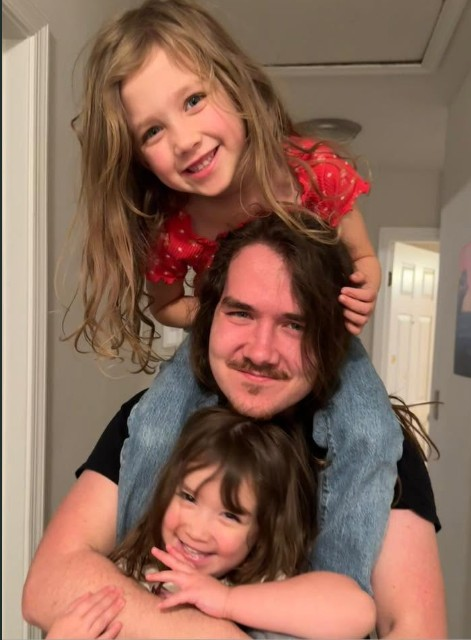
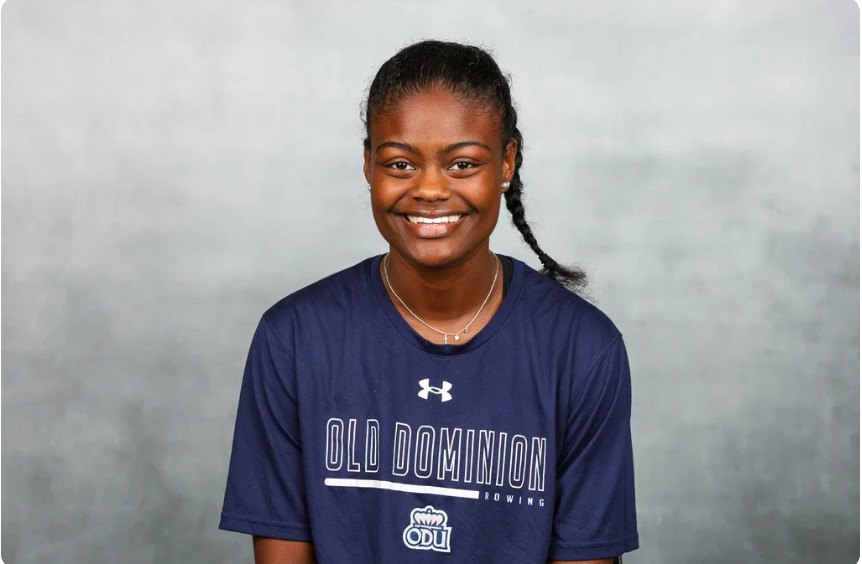
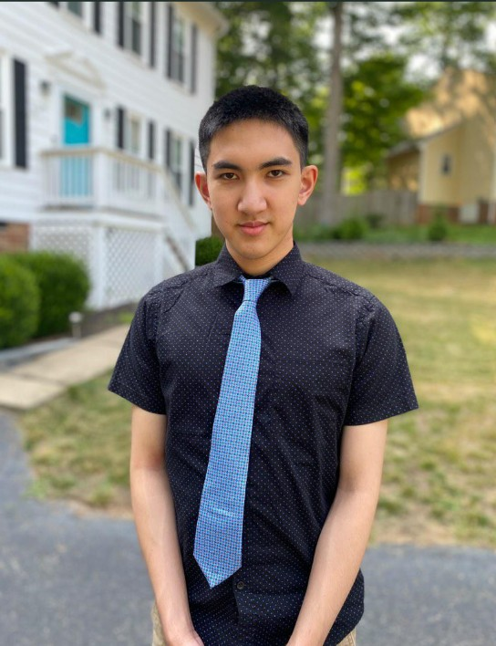
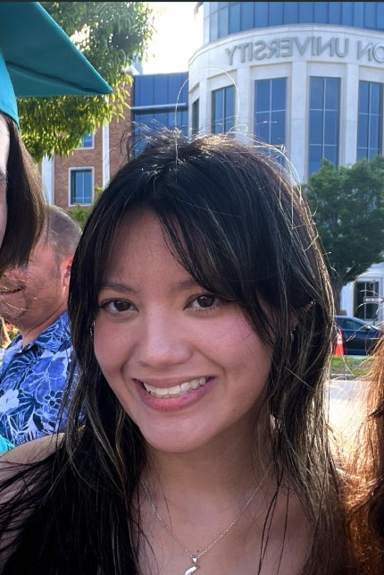
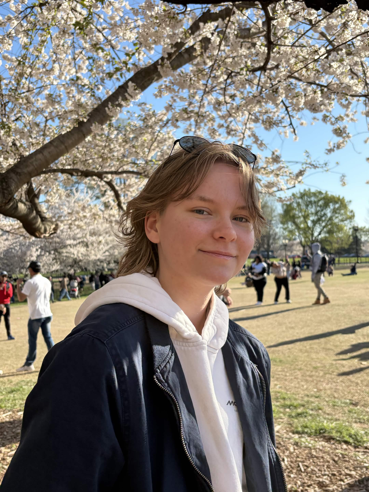
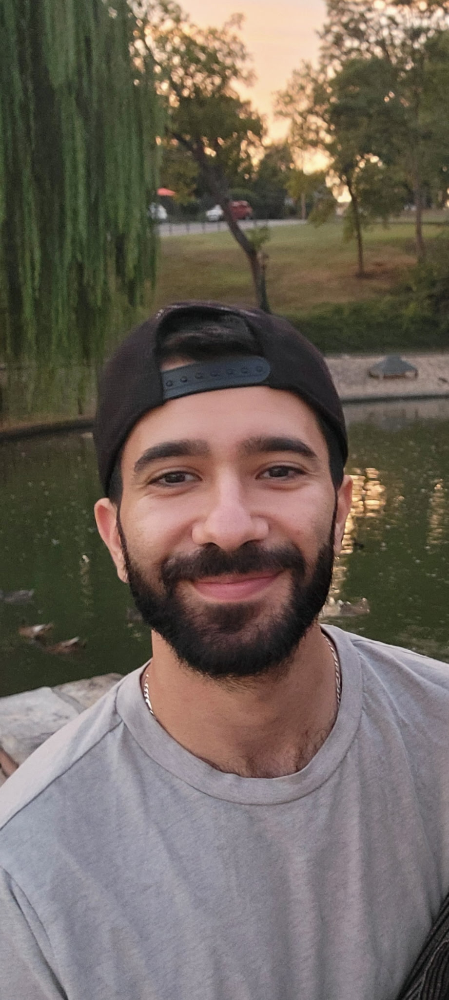
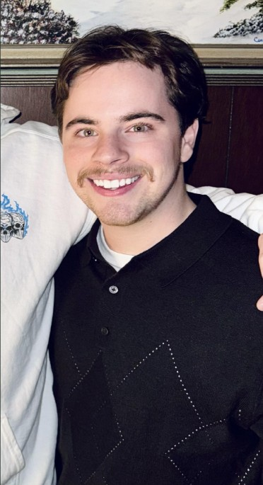
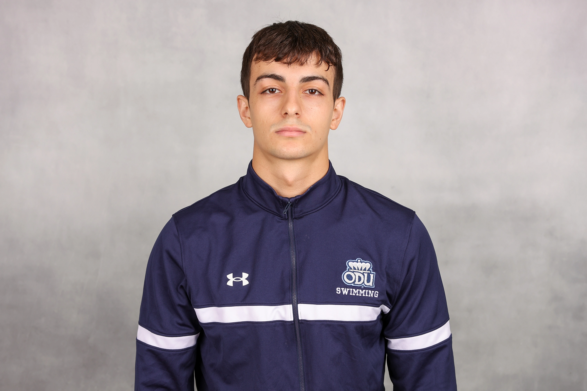

Seven computer science students at Old Dominion University, working together on DocStock through CS 410.

Isaiah Gamble
Add role
Isaiah Gamble is a senior at ODU majoring in Computer Science with a minor in Mathematics. He is a Coast Guard veteran and has "Experience Every Natural Disaster" on his bucket list. He plans on pursuing the arts after completion of his degree. On Team Pearl he works on [contribution to DocStock].

Julia Hairston
Add role
Julia Hairston is a senior at ODU majoring in computer science. She hopes to pursue a master's in data science in the future. She enjoys working out, listening to music, and doing puzzles in her free time. On Team Pearl she works on [contribution to DocStock].

Anson Cheng
Add role
Anson Cheng is a senior at ODU majoring in Computer Science, hoping to pursue a Master's. He enjoys playing guitar, gaming with friends, and wracking his head on problems. On Team Pearl he works on [contribution to DocStock].

Shannon Stinnette
Add role
Shannon Stinnette is a senior at ODU majoring in Computer Science. While working part-time as a server, she is currently working towards a variety of networking certifications. Other than working she spends her free time enjoying video games, books, and hanging out with friends. On Team Pearl she works on [contribution to DocStock].

Jessica Fischer
Add role
Jessica Fischer is a junior at Old Dominion University in the Linked Masters program for Computer Science. She enjoys gaming, working out, and hanging out with people in her free time. On Team Pearl she works on [contribution to DocStock].

Abdelrahman Aljazaeri
Add role
Abdelrahman “Ab” Aljazaeri is a senior at Old Dominion University majoring in Computer Science with a minor in Mechanical Engineering Technology. He likes to tinker with cars and dabbles in network security. He plans to keep working where software meets hardware after graduation. On Team Pearl he works on [contribution to DocStock].

Matthew Richards
Add role
Matthew Richards is a Senior Computer Science major at ODU. After graduating in May, he plans to move to Arlington, VA, and work for CACI doing backend development. He enjoys playing soccer, gaming, and playing the piano in his free time. On Team Pearl he works on [contribution to DocStock].

Toni Sallaku
Add role
Toni Sallaku is a senior athlete at ODU studying Computer Science. He is a swimmer, Lifeguard and Water Safety Instructor at the SRC. He likes working out, playing sports, and playing videogames. On Team Pearl he works on [contribution to DocStock].